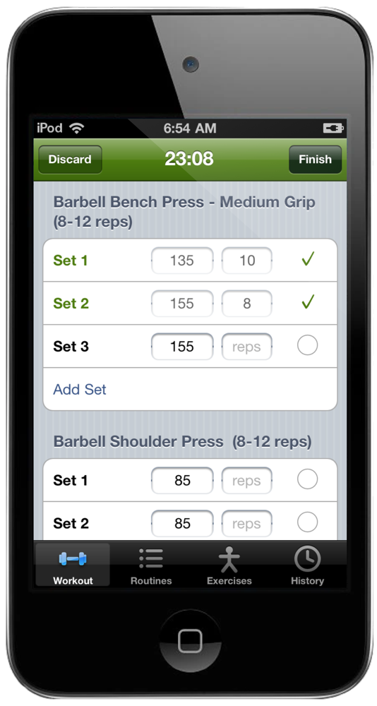
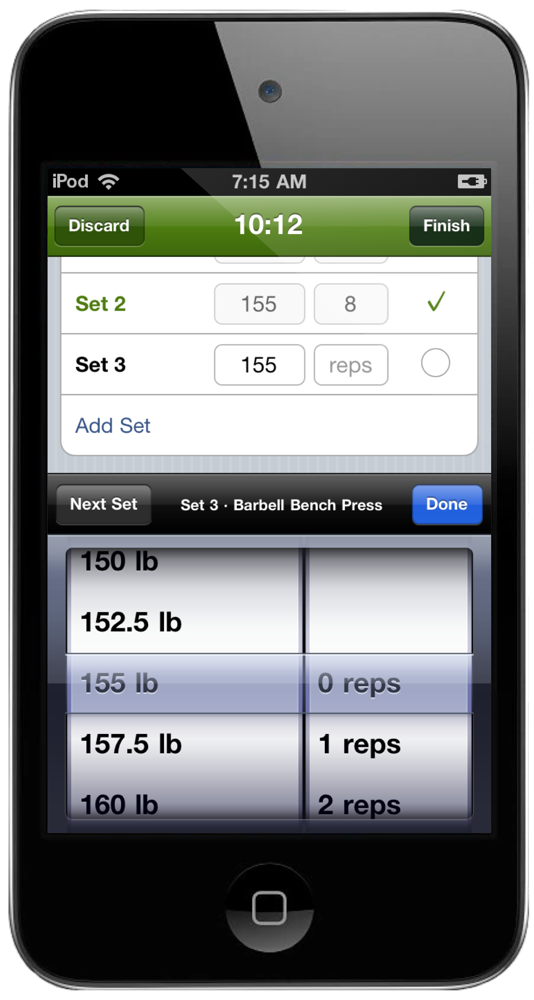
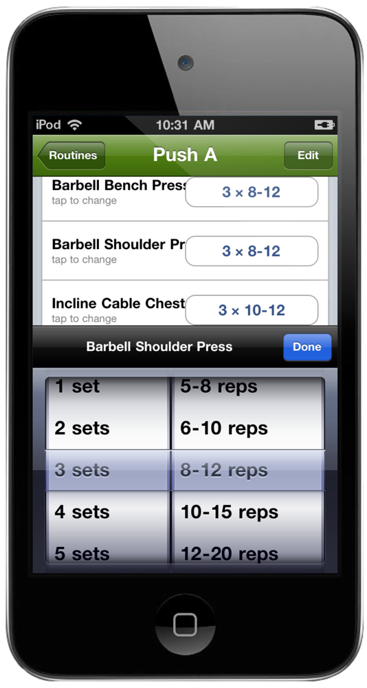
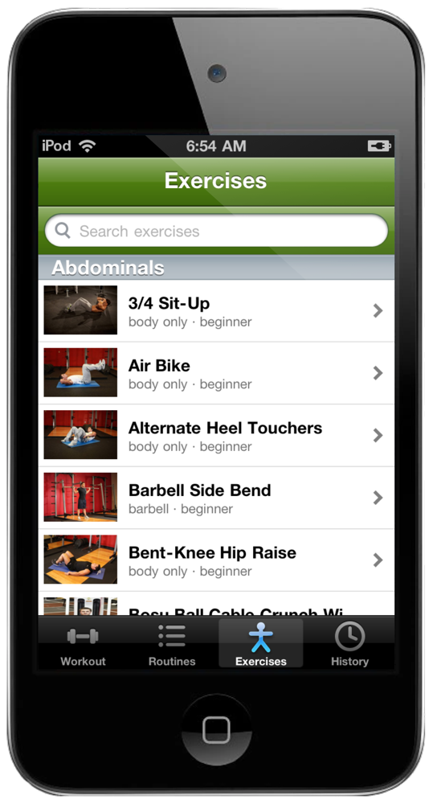
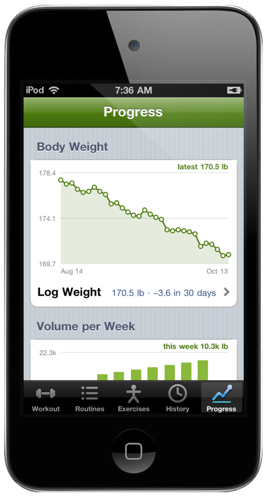
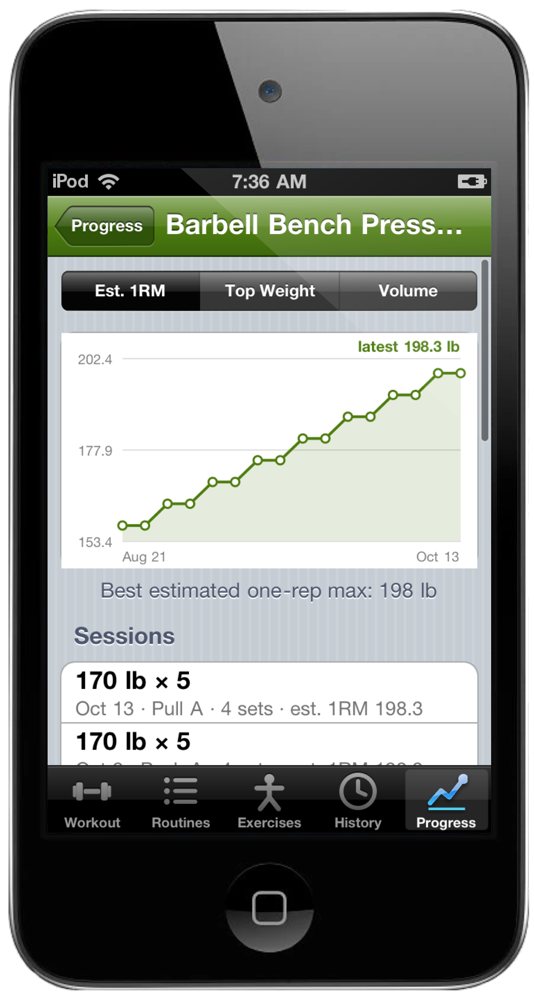
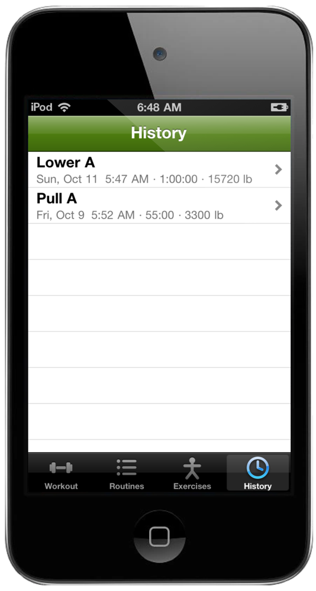

Tap a set and the wheel comes up. Weight on the left, reps on the right, with that click. Tap the circle when you're done and the rest timer starts on its own.

Tell it your goal, your level and your equipment. OpenRelay writes a routine for each training day. Edit it like any other: sets and reps spin on the same wheel.

Browse by muscle group or search. Every exercise shows both positions, step by step instructions, and your best set.

Body weight, volume per week, your streak. One tab, no typing. Log today's weight with the same wheel you use for sets.

Tap an exercise for its estimated one-rep max, heaviest set or total volume, workout by workout, back to your first.

How long it took and how much you moved. Pounds or kilos.